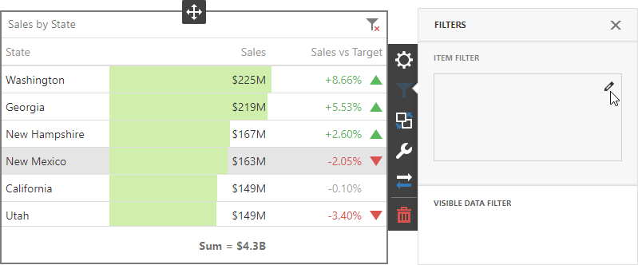
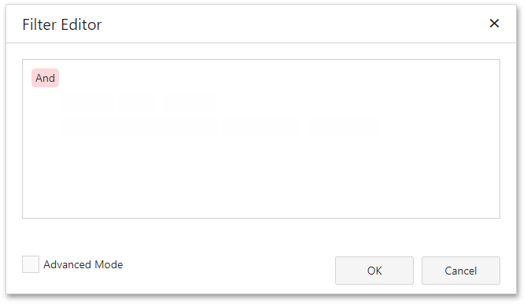
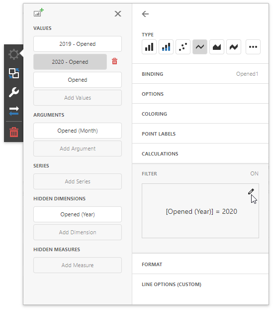
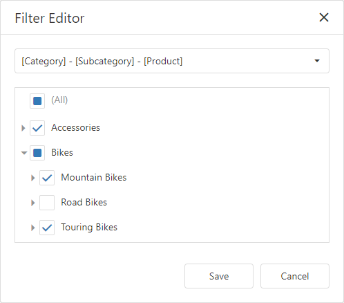

Filtering
Web Dashboard allows you to filter data in the dashboard items or apply filters to a specific measure. You can use dimensions and hidden dimensions to build filter criteria.

Dashboard Item Filter
Filters that are applied to a dashboard item affect only this item. Open a dashboard item's Filters menu, go to the Item Filter section and click Edit to add a filter:

This invokes the Filter Editor dialog where you can specify filter criteria:

Tip
Documentation: Filter Editor
Measure Filter
You can apply filters to individual measures. If you create multiple measures that only differ in applied filters, you can compare values calculated over different date-time periods or against different categories.
Open a dashboard item's Binding menu and select a measure to filter. In the invoked data item menu, open the Filter section and click Edit. This invokes the Filter Editor dialog where you can specify filter criteria.

Tip
Documentation: Filter Editor
You can clear the applied filter in the data item menu's Filter section.
Note
The measure filter is technically an expression that uses the filter(summaryExpression, filterCriteria) function, where summaryExpression is the measure to be filtered and filterCriteria is the filter. See the following topic for more information about functions you can use in dashboard expressions: Expression Constants, Operators, and Functions.
The image below shows a Chart with three measures:
- 2019 - Opened is filtered by year 2019.
- 2020 - Opened is filtered by year 2020.
- Opened is the original measure without filters.

Visible Data Filter
You can specify a Visible Data Filter to limit displayed data. This filter type does not filter underlying data used in calculations or intermediate level aggregations.
Open a dashboard item's Filters menu, go to the Visible Data Filter section and click Edit to invoke the Filter Editor, where you can specify a condition:

For example, a Grid dashboard item has 35 rows and displays sales percentages.

The image below shows the difference between filters (the filter condition is the same):
- Dashboard Item Filter: sales percentages are recalculated based on the visible data.
- Visible Data Filter: sales percentages remain the same because this filter type does not affect calculations.

OLAP Filtering Specifics
You cannot build complex filter criteria to filter data in OLAP mode. Filters for a measure are also not supported. Instead, you can filter dimension attributes and hierarchies: you can select the values you want (or do not want) to include in the dashboard.
Dimension Attribute
For dimension attributes, the Filter Editor contains a list of all values. The search panel is available for non-hierarchical fields.

Dimension Hierarchy
The Filter Editor displays hierarchies as a tree and allows you to filter values at any hierarchy level.
